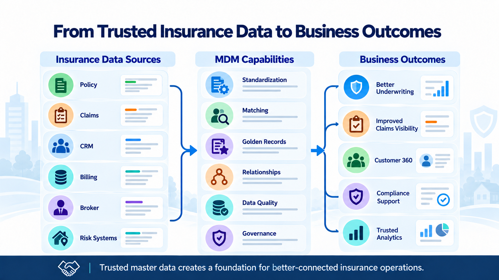
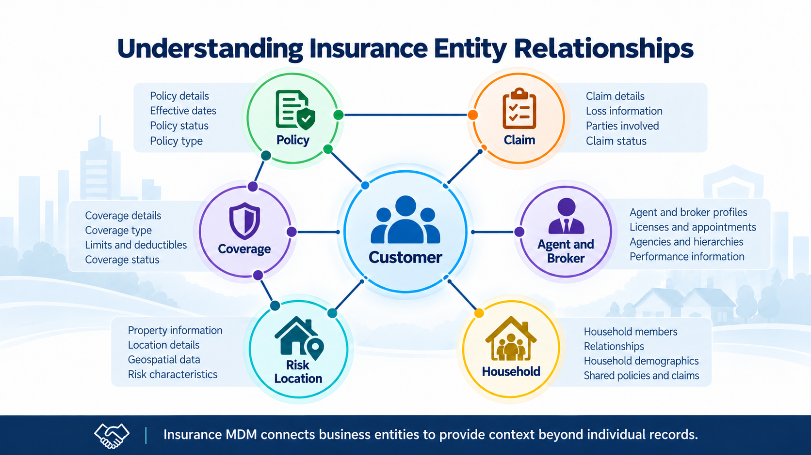
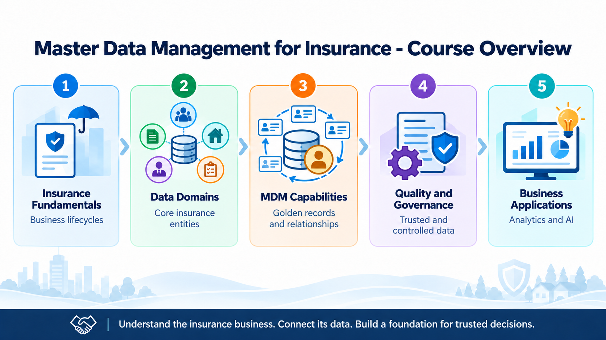

Master Data Management for Insurance
Course Introduction
Welcome to Insurance Master Data Management
Module support notes
Why Insurance Needs Master Data Management
Insurance organizations manage information across many interconnected business activities.
A single policyholder may have multiple policies, insured assets, claims, and relationships with agents or brokers.
However, these relationships are not always visible in one system.
Insurance information is commonly distributed across:
- Policy administration systems
- Claims management systems
- Customer relationship management systems
- Billing and payment systems
- Underwriting platforms
- Broker and agency management systems
- External data providers
Each system serves a particular business function and may maintain its own version of important information.
As a result, organizations can encounter duplicate records, inconsistent information, incomplete relationships, and conflicting data.
MDM provides processes, rules, governance, and technology for managing the core business entities shared across these systems.
The objective is not simply to consolidate records. It is to establish reliable information and relationships that can be used consistently throughout the insurance organization.

The Importance of Connected Insurance Entities
Insurance data is relationship-driven.
A customer may own several policies. Each policy may provide different types of coverage. A policy may insure one or more vehicles, properties, or other assets.
Claims are associated with losses and may be linked to policies, coverage, claimants, and insured assets.
Agents and brokers introduce additional relationships involving policy sales, distribution, and servicing.
These relationships are important because an insurance record rarely provides the full business context on its own.
For example, a claim record becomes more meaningful when it can be connected to the relevant policy, coverage, policyholder, and insured property.
MDM helps establish and maintain these connections so business functions can work with a more complete understanding of the entities involved.

From Trusted Data to Business Value
The purpose of insurance MDM extends beyond improving the accuracy of individual records.
Its broader value comes from making trusted information available to business processes and systems.
For example:
Underwriting: Reliable information about policyholders, insured assets, and risk locations can support more consistent risk assessments.
Claims management: Connected customer, policy, and claim information can help claims teams investigate losses and identify relevant relationships.
Customer service: A consolidated customer view can help service teams understand a policyholder's insurance products and interactions.
Compliance: Governed master data supports consistent reporting, traceability, and clearer accountability for data.
Analytics and AI: Connected, reliable master data provides a stronger foundation for reporting, predictive models, and other data-driven applications.
MDM does not automatically produce these outcomes. Organizations must also establish appropriate business rules, integration processes, governance responsibilities, and controls.

